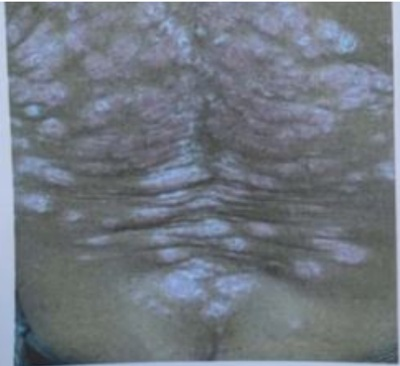
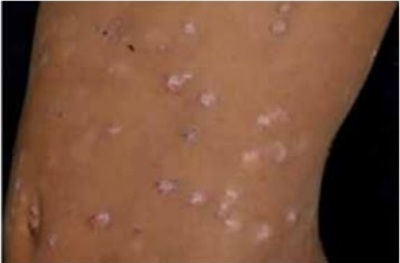
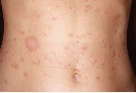
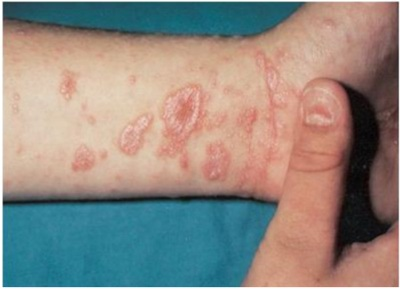

Questão 1 · Psoríase · 4000151774Mulher de 39 anos comparece ao ambulatório da clínica médica, apresentando, ao exame físico, lesões pápuloescamosas eritematosas, bem demarcadas em quase toda a superfície corporal e quando procede-se à curetagem (método de raspagem), observa-se o sinal de Auspitz ou “orvalho sangrante”. O diagnóstico provável é:
A Líquen vulgar
B Pênfigo Vulgar
C Psoríase
D Lúpus eritematoso discoide
E Granuloma anular.
Questão 2 · Tratamento · 4000134635Qual a opção de escolha para tratamento de Psoríase Pustular Generalizada grave com início de ação mais rápido?
A Ciclosporina.
B Acitretina.
C Metotrexato.
D Metilprednisolona.
E Fototerapia.
Questão 3 · Tratamento · 4000110743Sobre o tratamento da psoríase, é correto afirmar:
A a fototerapia é pouco eficaz para lesões em couro cabeludo.
B o uso de imunobiológicos é contraindicado devido ao risco de infecção secundária.
C corticoide sistêmico parenteral é a droga de escolha em períodos de atividade intensa.
D ciclosporina é a droga de escolha para tratamento de manutenção nos pacientes com doença renal crônica.
E a fototerapia não deve ser utilizada em monoterapia.
Questão 4 · Psoríase · Diagnóstico e avaliação de gravidade · Artrite psoriásica · 4000109527Mulher, 45 anos de idade, apresenta há 8 anos lesões eritematosas e descamativas, bem delimitadas, com eritema vermelho vivo e escamas branco prateadas aderentes e esparsas no couro cabeludo, região sacral, cotovelos e joelhos. Sinal da vela e do orvalho sangrento estão presentes. Apresenta história de monoartrite de articulação interfalangeana proximal no 3° quirodáctilo direito. Qual é o diagnóstico?
A Lúpus eritematoso cutâneo crônico.
B Psoríase.
C Artrite reumatoide.
D Dermatite seborreica.
Questão 5 · Apresentação clínica · 4000075806Qual é a lesão clássica da psoríase?
A Placa eritematosa bem demarcada com descamação superficial branco-prateada. A distribuição abrange as superfícies extensoras (joelhos, cotovelos) e nádegas e pode afetar as palmas das mãos bem como o couro cabeludo principalmente a margem anterior.
B Distúrbio autolimitado com duração de 3 a 8 semanas. Inicialmente, surge uma única placa anular cor de salmão (placa heráldica com 2 a 6 cm de diâmetro e um halo de descamação periférica; alguns dias ou semanas depois, surge uma erupção generalizada que afeta o tronco e os segmentos proximais dos membros. As lesões são semelhantes, ainda que menores que a placa heráldica, e estão dispostas em padrão simétrico com os eixos longitudinais da lesão ao longo das linhas de clivagem da pele.
C As lesões são pruriginosas, poligonais, violáceas e de superfície plana. A evolução é variável, mas a maioria dos pacientes tem remissões espontâneas em 6 a 24 meses.
D Dermatite eczematosa crônica, intermitente e extremamente pruriginosa com placas eritematosas descamativas, formação de vesículas, crostas e fissuras. As lesões ocorrem mais nas superfícies flexoras, há o acometimento marcante das fossas antecubitais e poplíteas; eritrodermia generalizada nos casos graves.
E Distúrbio não infeccioso crônico evidenciado por placas eritematosas com descamação amarelada e gordurosa. Em geral, as lesões localizam-se no couro cabeludo, nos supercílios e sulcos nasolabiais, nas axilas, na região central do tórax e na região retroauricular.
Questão 6 · Diagnóstico e avaliação de gravidade · Tratamento · 4000074080Mulher, 22 anos, procura a UBS com diagnóstico de psoríase hà 3 anos. Ao exame apresentava PASI = 22 e DLQI = 20, em relação a este quadro é correto afirmar que esta paciente:
A Apresenta apenas impacto na sua qualidade de vida e deve ser medicada comantidepressivos.
B Apresenta quadro grave de psoríase e a medicação a ser prescrita é acitretina.
C Apresenta quadro grave de psoríase com grande impacto na sua qualidade de vida.
D Apresenta quadro moderado de psoríase e não necessita tratamento sistêmico.
Questão 7 · Pitiríase rósea de Gilbert · 4000061969Paciente feminina, 19 anos de idade, procura atendimento na UBS referindo o aparecimento, há 2 semanas, de uma mancha em braço esquerdo, não pruriginosa e que, há 2 dias, houve um aumento no número das lesões. Nega febre, uso de medicamentos, contato com animais, ou quadro semelhante, em familiares e pessoas próximas. Ao exame, apresenta uma mácula eritemato-descamativa de 8 cm de diâmetro em membro superior esquerdo e múltiplas lesões ovalares menores, eritemato-descamativas, disseminadas em tronco e raiz dos membros. A face estava poupada. Assinale a alternativa que apresenta, corretamente, o diagnóstico.
A Eczema de contato.
B Psoríase vulgar.
C Ptiríase rósea.
D Tinea corporis.
E Urticária.
Questão 8 · Tratamento sistêmico · 4000054537Um dos tratamentos sistêmicos da psoríase são os medicamentos imunobiológicos. Moléculas proteicas, podendo ser anticorpos monoclonais, proteínas de fusão ou citocinas humanas recombinantes, indicados especialmente para doentes resistentes aos tratamentos convencionais. Assinale a alternativa que corresponde ao imunobiológico que é classificado como anticorpoanti-TNF
A Secuquinumabe.
B Adalimumabe.
C Ixequizumabe.
D Ustequinumabe.
E Guselcumabe.
Questão 9 · Psoríase · 4000003601Psoríase é doença inflamatória crônica, acomete pele e articulações, multifatorial e imunologicamente mediada. Sobre o exposto, assinale a alternativa INCORRETA.
A Dentre os fatores desencadeantes da psoríase estão traumatismos locais, infeção bacteriana e viral, estresse, tabagismo e alcoolismo.
B Nas manifestações clínicas são observadas placas eritemato escamosas, escamas secas, brancas ou prateadas, aderentes e estratificadas, delimitadas.
C No diagnóstico diferencial da psoríase devem ser considerados os eczemas, dermatite seborreica, sífilis secundária, farmacodermias e lúpus eritematoso.
D O diagnóstico é baseado na história, nos aspectos clínicos da lesão que, na maioria das vezes, são muito características e definem a doença.
E A biópsia e o anatomopatológico das lesões suspeitas de psoríase é que determinam o diagnóstico da doença.
Questão 10 · Diagnóstico e avaliação de gravidade · Apresentação clínica · 4000108455Homem, 46 anos, hipertenso e diabético, apresenta lesões de pele ( figura) há 6 anos, associadas a prurido local. Queixa-se também de dores articulares nas mãos pela manhã com melhora ao longo do dia. Qual é a propedêutica mais adequada para a confirmação do diagnóstico?

A Pesquisa de células de Sèzary no sangue.
B Curetagem metódica de Brocq.
C Sorologia para sífilis.
D Micológico direto e cultura para fungos.
Questão 11 · Pitiríase rósea de Gilbert · 4000071092Afecção cujas lesões distribuem-se principalmente pelo tronco poupando a face, os pés, as mãos e que na maioria das vezes apresenta um prurido ausente ou muito discreto:
A Pitiríase versicolor.
B Psoríase.
C Pitiríase rubra pilar.
D Líquen plano.
E Pitiríase rósea.
Questão 12 · Pitiríase rósea de Gilbert · 4000040621Homem de 18 anos comparece ao pronto socorro com quadro clínico caracterizado por erupção cutânea constituída por lesões ovalares, eritemato-escamosas, distribuídas em maior intensidade no tronco e membros inferiores, poupando a face, com prurido discreto e sem outras queixas. Relata ao médico que o quadro teve início há 3 semanas com aparecimento de uma lesão arredondada no tronco, de cerca de 5 cm, que apresentou crescimento centrífugo. Baseado no quadro clínico apresentado, é correto afirmar que:
A o diagnóstico diferencial principal ao quadro clínico apresentado deverá incluir necessariamente a Sífilis Secundária.
B tratamento à base de corticoides tópicos de média e baixa potência não são eficazes.
C há necessidade de tratamento com antivirais tal como aciclovir associados obrigatoriamente a corticoides, uma vez que a doença, na ausência de tratamento, tem caráter progressivo e não regride espontaneamente.
D o quadro clínico acima pode estar associado a infecções virais tal como Echovirus Coxsackie.
E em geral, após o tratamento, há recidiva do quadro clínico após um ano do episódio inicial.
Questão 13 · Psoríase em placas · 4000085096Escolar, seis anos, feminina, apresenta há cinco dias no dorso da língua duas manchas avermelhadas, irregulares, namente demarcadas e lisas, limitadas por bordas serpiginosas amareladas e elevadas. A conduta mais adequada é:
A Anti-histamínicos orais.
B Exclusão de alimentos ácidos.
C Corticoides tópicos.
D Orientação aos pais.
Questão 14 · Psoríase · 4000069070Sobre psoríase, assinale a alternativa correta:
A As lesões são eritematosas e descamativas, acometendo apenas pele e couro cabeludo, mas não as unhas.
B Tem alteração de sensibilidade táctil e térmica.
C Infecções, o uso de medicamentos como corticoide injetável e lítio podem piorar a psoríase.
D O sol piora as lesões, sendo contra indicado fototerapia.
E A psoríase raramente está associada à artrite.
Questão 15 · Psoríase · 4000038333Em relação à série de afirmações a respeito da Psoríase, é correto afirmar que:
A A psoríase de Von Zumbusch é uma forma muito comum e se manifesta por eritrodermia e febre.
B O principal diagnóstico diferencial é com pênfico vulgar.
C O comprometimento das unhas é raro.
D A psoríase gutata geralmente ocorre após uma infecção viral ou bacteriana, mais comumente por Streptococcus; aparece como pápulas pequenas, eritematosas e descamativas, espalhadas sobre uma grande área do corpo em uma distribuição como gotas de chuva.
E Metade dos pacientes apresenta também artrite psoriásica.
Questão 16 · Psoríase eritrodérmica · 4000098100Homem, 21a, com diagnóstico de psoríase leve, apresentou amigdalite purulenta. Foi medicado com uma injeção de corticoide, amoxicilina e diclofenaco. Duas semanas depois, apresentou piora do quadro cutâneo, com lesões eritêmato- descamativas acometendo mais de 90% da superfície corpórea. O diagnóstico é:
A Síndrome de Stevens-Johnson, por reação à droga.
B Eritrodermia esfoliativa, por exacerbação da doença.
C Síndrome da pele escaldada, por toxina bacteriana.
D Necrólise epidérmica tóxica, por reação à droga.
Questão 17 · Apresentação clínica · Psoríase em placas · Pitiríase rubra pilar · 4000079583Relacione as colunas. (1) dermatite seborreica; (2) psoríase; (3) pitiríase rósea de Gibert; (4) pitiríase rubra Pilar; ( ) Constitui-se elemento semiótico importante a imprecisão dos limites das lesões no couro cabeludo. ( ) É afecção auto-resolutiva, sendo o tronco a área mais atingida. O couro cabeludo nunca é comprometido. ( ) A sua principal característica é a presença de lesões eritemato-escamosas, bem delimitadas, formando placas confluentes, localizadas no couro cabeludo e em áreas de maior atrito. ( ) É relativamente rara, enside em qualquer idade e tem uma possível associação com neoplasia. ( ) Infecção bacteriana, exposição excessiva aos raios UVB, fármacos e episódios agudos de estresse são alguns fatores desencadeantes desta doença. ( ) O tratamento desta doença está baseado no controle das leveduras Malassezia e das condições que propiciam seu desenvolvimento. A seqüência numérica correta de preenchimento dos parênteses da segunda coluna, de cima para baixo, é:
A 1 – 3 – 2 – 4 – 2 – 1.
B 1 – 2 – 4 – 1 – 3 – 2.
C 1 – 4 – 2 – 3 – 2 – 1.
D 2 – 3 – 1 – 4 – 1 – 2.
Questão 18 · Psoríase · 4000052917A psoríase é uma das doenças dermatológicas mais prevalentes, afetando até 1% da população mundial. É uma doença inflamatória de pele. A respeito da psoríase, podemos dizer que:
A A forma mais comum de apresentação clínica é a psoríase invertida, acometendo regiões como axila, virilha, umbigo e inframamária.
B Alguns fatores externos podem exacerbar a psoríase, como: infecções, estresse e fármacos, dentre eles o lítio, betabloqueadores e antimaláricos.
C A psoríase gutata (psoríase eruptiva) é mais comum em adultos de meia idade e idosos e existe uma clara relação desta forma de psoríase com infecção de vias aéreas superiores.
D Cerca de 50% dos pacientes com psoríase têm alteração ungueal; alguns podem ter artralgia, mas sem relação com artrite psoriásica.
E A etiologia da psoríase ainda não é totalmente conhecida; sabe-se que existe um componente genético, mas a minoria dos pacientes tem história familiar.
Questão 19 · Psoríase · 4000037644Em relação à Psoríase, assinale a alternativa INCORRETA.
A Doença inflamatória e multissistêmica.
B Imunologicamente mediada e sem preferência sexual.
C Comum em negros e pode ocorrer em qualquer idade.
D Drogas como os betabloqueadores e lítio induzem ou agravam a psoríase.
Questão 20 · Tratamento · 4000057559No tratamento da psoríase, é contraindicado o uso de
A Etanercepte.
B Adalimumabe.
C Metotrexato.
D Prednisona.
E Ciclosporina.
Questão 21 · Fatores desencadeantes · 4000000451Dentre os fatores sistêmicos desencadeantes e agravantes de psoríase estão os citados a seguir, EXCETO:
A Infecção
B Drogas
C Gestação
D Tabagismo
E Álcool
Questão 22 · Fisiopatologia · 4000020300A psoríase é uma dermatose crônica caracterizada por lesões eritemato-escamosas. Pode ocorrer em qualquer idade ou sexo. Nesse sentido,
A o principal gene implicado encontra-se no cromossomo 6p21 e foi designado PSORS I. A doença não apresenta o fenômeno isomórfico ou reação de Koebner.
B as drogas como lítio, betabloqueadores e antimaláricos podem agravar a doença. O uso ou a interrupção de corticoide sistêmico pode desencadear a forma pustulosa.
C a doença é mediada por células T de memória ativadas e não afeta áreas de dobras ou semimucosas genitais.
D a curetagem metódica de Brocq fornece dois sinais clínicos que ajudam no diagnóstico: sinal de Zileri e sinal do orvalho sangrento.
Questão 23 · Psoríase gutata · 4000117372Menino de 9 anos, após 2 semanas de infecção estreptocócica de orofaringe e utilização de amoxicilina, apresentou placas eritematodescamativas no tronco e nos membros inferiores, poupando face. (VER IMAGEM) O diagnóstico é

A Psoríase gutata.
B Rubéola.
C Escarlatina.
D Sarampo.
E Varicela.
Questão 24 · Pitiríase rósea de Gilbert · 4000064060Menina de 4 anos é atendida por você no posto de saúde com quadro de lesões avermelhadas e descamativas distribuídas no dorso com cerca de uma semana de evolução. Segundo a mãe, há cerca de uma semana ela percebeu uma mancha avermelhada e ovalada de cerca de 3 cm no dorso à esquerda. Alguns dias depois surgiram outras lesões rosa-escuras menores, próximas à lesão inicial, não pruriginosas. Ao exame, as lesões têm distribuição simétrica no dorso, tendendo a seguir a linha das costelas. A descrição do quadro e o tratamento para essa condição são:
A dermatite atópica, aplicação de corticoide tópico.
B tinea corporis, aplicação de antifúngico tópico.
C tinea versicolor, aplicação de shampoo anticaspa.
D pitiríase rósea, observação clínica.
E dermatite atópica, administração de corticoide sistêmico.
Questão 25 · Pitiríase rósea de Gilbert · 4000083429Menina de 12 anos foi trazida à consulta por apresentar lesão de pele, de aspecto circular, percebida há cerca de 1 semana, seguida do aparecimento de rash com distribuição predominante no tronco, acompanhado de discreto prurido e leve descamação central em algumas lesões. A mãe negou febre, exposição a drogas ou qualquer outro sintoma. O exame físico foi normal para a idade, com exceção das lesões de pele referidas. Qual o diagnóstico mais provável?

A Eritema multiforme
B Eritema infeccioso
C Síndrome de Gianotti-Crosti
D Ptiríase alba
E Ptiríase rósea
Questão 26 · Pitiríase rósea de Gilbert · 4000062760O diagnóstico provável de uma dermatose que apresenta uma placa precursora e tem uma distribuição em árvore de Natal é:
A líquen espinhoso;
B ceratose pilar;
C pitiríase rósea;
D xerodermia pigmentar;
E psoríase em gota.
Questão 27 · Psoríase · Manif estações articulares · Apresentação clínica · 4000049136Paciente feminina de 40 anos tem história de psoríase vulgar há 5 anos, bem controlada com tratamento tópico (calcitriol pomada) mais fototerapia. Nesta consulta, vem referindo que há dois meses tem notado o aparecimento de lesões em unhas. São depressões cupuliformes que dão à unha aspecto de dedal. Sobre o caso, analise as afirmações abaixo. I - A paciente deve realizar raios X de mãos em AP e perfil; II - Provavelmente, a psoríase atingiu a matriz ungueal e por isso se formaram as lesões cupuliformes (pitting); III - Costuma haver associação de acometimento ungueal pela psoríase com artrite psoriásica, neste caso com acometimento de interfalangianas distais; IV - Paciente com psoríase ungueal tem maior probabilidade de apresentar dactilite; V - Formas complicadas de psoríase geralmente decorrem de tratamentos inapropriados (como a interrupção abrupta de corticoide sistêmico). Sobre as afirmativas acima, estão CORRETAS:
A Apenas I, II, III e IV.
B Apenas I, II e III.
C Apenas II e III.
D Apenas II, III e V.
E Todas as afirmativas.
Questão 28 · Apresentação clínica · 4000031578Mulher de 32 anos, com hepatite C crônica, apresenta pápulas violáceas, pruriginosas, com na rede de linhas branco- acinzentadas na superfície, acometendo as faces exoras dos punhos. As unhas das mãos estão acometidas, sobretudo as dos polegares. Qual o diagnóstico mais compatível com este quadro? (VER IMAGEM)

A Psoríase.
B Líquen plano.
C Pitiríase rósea.
D Dermatofitose.
E Eczema disidrótico.
Questão 29 · Pitiríase rósea de Gilbert · 4000078491Múltiplas lesões cutâneas ovaladas, pequenas e com predomínio no tronco, levaram uma pedagoga ao consultório dermatológico vizinho. De cor castanho-clara, elas descamavam nos bordos, coçavam pouco e preservavam pés, mãos e face. No dorso, era perceptível uma nítida distribuição metamérica. Como na semana anterior ela tivera estranha lesão de pele isolada, que logo desapareceu, ficou evidente ser uma típica de pitiríase:
A Rósea.
B Versicolor.
C Liquenoide.
D Amiantácea.
Questão 30 · Dermatoses paraneoplásicas · Outras doenças internas · 4000076935Psoríase e síndrome de Sweet podem ocorrer nas seguintes patologias:
A Insuficiência cardíaca congestiva.
B Hipertensão arterial sistêmica.
C Doenças inflamatórias intestinais.
D Osteoartrose.
E Síndrome do intestino irritável.
Questão 31 · Associação de psoríase e outras doenças · 4000075342Paciente com psoríase tem um risco aumentado de:
A diabetes mellitus.
B lupus eritematoso sistêmico.
C síndrome metabólica.
D melanoma.
Questão 32 · Apresentação clínica · Fatores desencadeantes · Apresentação clínica · 4000061795Sobre a psoríase, considere as afirmativas a seguir. I. O fenômeno de Koebner, que não é exclusivo da psoríase, consiste na reprodução de lesões em áreas originalmente não comprometidas após trauma físico, químico ou elétrico. II. Alguns medicamentos podem agravar a psoríase, em particular os betabloqueadores e os anti-inflamatórios não hormonais. III. O fenômeno central na patologia da psoríase é o aumento do tempo de troca celular, com diminuição importante das células em proliferação. IV. A distinção entre dermatite seborreica e psoríase do couro cabeludo é feita pela delimitação das lesões: na forma vulgar e na forma invertida da psoríase as lesões são bem delimitadas. Assinale a alternativa correta.
A Somente as afirmativas I e II são corretas.
B Somente as afirmativas I e III são corretas.
C Somente as afirmativas III e IV são corretas.
D Somente as afirmativas I, II e IV são corretas.
E Somente as afirmativas II, III e IV são corretas.
Questão 33 · Tratamento · 4000055981Corticoides são medicamentos muito utilizados no arsenal terapêutico mediante determinados cuidados e critérios. Assinale a alternativa falsa quanto à aplicação clínica de corticoides tópicos:
A Potências fracas podem ser recomendadas para intertrigo, prurido anal, dermatite seborreica em áreas restritas e por pouco tempo.
B As formas gel e pomada tendem a ser superiores em atividade e em potencial de efeitos colaterais em relação aos cremes.
C Potência alta tem indicação restrita podendo ser prescritas para casos de psoríase palmoplantar.
D Corticoide fluorado é indicado principalmente para a face por sua baixa potência.
E Taquifilaxia, ou seja, diminuição da ação terapêutica ocorre após uso do medicamento por algum período de tempo.
Questão 34 · Diagnóstico e avaliação de gravidade · Psoríase invertida · Psoríase em placas · 4000102940Homem, 45 anos de idade com erupção cutânea e dor em pequenas articulações, há 1 ano. Refere hipertensão arterial controlada e que o pai apresentava alterações cutâneas semelhantes. Após o exame dermatológico, suspeitou-se de psoríase. Em relação a esta doença, é CORRETO afirmar:
A A técnica semiótica da curetagem metódica de Brocq permitirá observar os sinais da vela, da membrana e do orvalho sanguíneo.
B O diagnóstico diferencial é realizado com outras dermatoses cujas lesões elementares consistem em infiltração e/ou discromia.
C Os exames anatomopatológico, o sorológico e o genético são importantes para a confirmação diagnóstica.
D A presença do acometimento flexural e ungueal afasta o diagnóstico.
Questão 35 · Apresentação clínica · 4000015687Escolar de 8 anos de idade, sexo masculino, é atendido devido à lesão de pele, principalmente em áreas de cotovelos, joelhos e couro cabeludo, de caráter recorrente. Ao exame da pele observa-se lesões simétricas em áreas de extensão dos membros e couro cabeludo de contornos nítidos, base eritematosa, recobertas por descamação seca branco-prateada. Diante destes dados, qual o provável diagnóstico? Respostas: 1 12 23 34
A Eczema atópico.
B Dermatite seborreica.
C Psoríase.
D Estrófulo.
E Eczema de contato.